RQ1
What do programs buy an agent that acts in the physical world, and what do they cost?
Where in the stack should the program sit, when does it outperform an end-to-end policy, and how should the two be combined?
Agentic Intelligence for the Physical World
Writing a robot program is getting cheap. Knowing what it did is not.
1NUS 2HKBU 3UWaterloo 4ANU 5Fudan 6SMU † Corresponding author
01
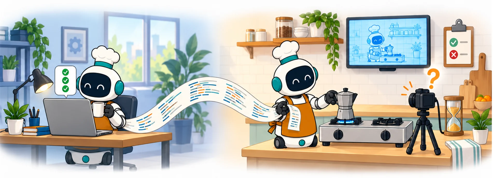
Coding agents built to repair software now write, test, and repair programs for robots. Unlike in software, the test suite does not come with the code: whether a robot program works must be established by running it on a robot, in a physics simulator, or through the policies it helps to train.
We examine this emerging area, agentic intelligence for the physical world, by treating the world as the program's test suite. We locate each program along two axes. The first is where it sits relative to the actuator, from programs that act or orchestrate learned policies to programs that write rewards and build training worlds. The second is what judges it, from simulator predicates and learned judges to humans and physical outcomes.
Along both axes, the same bottleneck appears: producing a program is becoming cheap, while obtaining trustworthy evidence about what it does remains costly and error-prone. This bottleneck limits what current results can claim. Comparisons that favor programs over end-to-end policies cover mainly conditions where those policies are known to be weak. Judges make errors that optimization can amplify, and skill libraries can improve on average while individual tasks regress.
Drawing on software engineering, we identify which of its practices transfer to physical agents and which break, and we analyze what current evaluations rarely report: cost, variance, the error and visibility of the judge, and the link between simulation and reality. We argue that progress will depend less on writing better programs than on building a physical counterpart of continuous integration: verification cheap enough to run often, reliable enough to trust under search, and maintained alongside the experience it validates, so that agents can keep improving as they act in the world.
02
A model writes a program, the program runs in physical dynamics, a judge decides from what happened whether it succeeded, and that result either guides a repair or adds the program to a library that later programs reuse.
The paper opens on one scene: a coding agent trying to put a moka pot on a stove. Tap a stage to follow it.
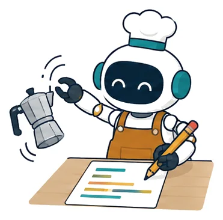
The fingers have closed on empty air beside the pot. The agent rereads the grasp routine it wrote an hour earlier and sees that it aimed at the center of the pot's segmentation mask. It changes the target to the handle.
What can go wrong here. The primitive interface limits what programs can do. Richer primitives raise success, and the strongest models can write some of the missing ones.
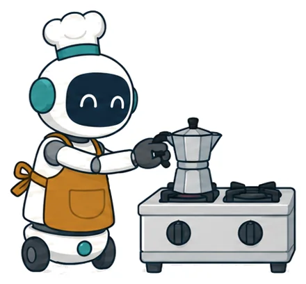
It runs the program again from fifty initial states.
What can go wrong here. Every run has to be paid for. A result may need an episode, a training run, or hardware, and the wait ranges from immediate feedback to about a day for one Eurekaverse curriculum search.
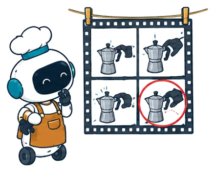
The pot is lifted in most of them. Yet the task is unfinished: has the pot reached the burner, and is it upright and stable?
What can go wrong here. Every kind of judge has documented failure modes. Predicates can misstate the task, the best of thirteen VLM detectors on FailBench reaches 0.77 balanced accuracy, and optimizing against a learned judge can amplify its errors.
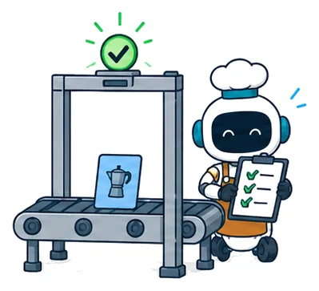
The agent writes a short note describing the failure and its fix, and adds it to a library that agents working on other tasks will read.
What can go wrong here. A library keeps whatever its acceptance test lets through. ASPIRE's average rises as its library grows, while one task falls from 0.68 to 0.26.
The scene is a composite with illustrative details; systems such as ASPIRE already carry out this sequence of inspection, repair, validation, and reuse. Paper, Section 1 and Figure 2.
acts on the robotorchestrates learned policieswrites rewardsbuilds training worlds
near the actuatorfar from it
simulator predicateslearned judgeshumansphysical outcomes
cheap to askcostly to ask
RQ1
Where in the stack should the program sit, when does it outperform an end-to-end policy, and how should the two be combined?
RQ2
What do traces, judges, simulators, and formal checks contribute, and what replaces physical trial when trial is not allowed?
RQ3
When do skill libraries help or hurt, how far does their content transfer, and what must be reported for a result to be interpretable?
03
Eight numbers from the systems the survey compares. Each shows either how much execution feedback is worth or how hard it is to trust.
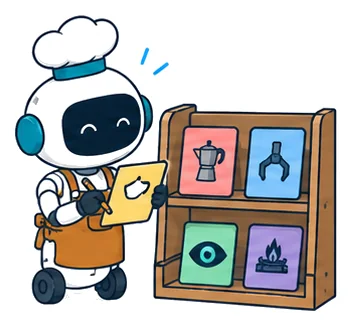
14% → 62%
An execution engine and a skill library together raise ASPIRE's macro-average success on LIBERO-PRO. Evolutionary search adds another 10 points.
ASPIRE ablation · Introduction
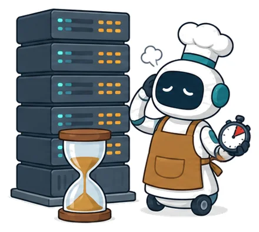
$15 · 24 h
One full Eurekaverse run: about 15 US dollars of language-model calls and a day on eight A6000 GPUs, because judging a generated world means training a policy in it.
Eurekaverse · Introduction
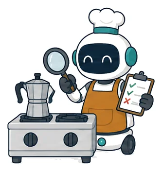
0.77
The best balanced accuracy among thirteen vision-language detectors on FailBench, judging whether a manipulation succeeded.
FailBench · Introduction
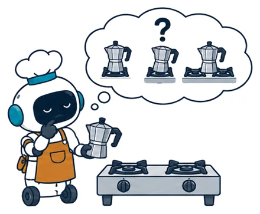
1 in 4
Of the failed OpenRUA episodes analyzed, about a quarter involve a success condition absent from the instruction or a predicate that contradicts it.
OpenRUA · Introduction
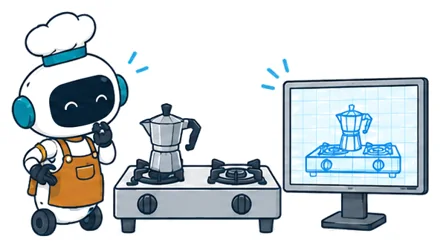
8 of 10
Tasks that Agentic RSR solved in reconstructed scenes and that also succeeded on the real robot.
Agentic RSR · Testing programs
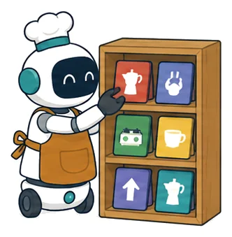
0.68 → 0.26
One task's success as ASPIRE's library grows from 50 to 90 source tasks, while the average rises from 0.047 to 0.305.
ASPIRE, LIBERO-PRO Long · Learning from experience
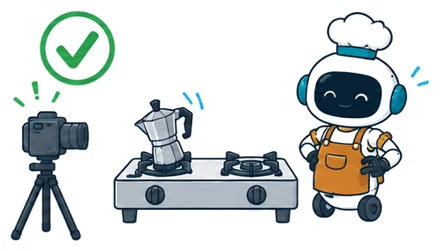
57 accepted
Changes an agent accepted over one 123-round run, while its target task never succeeded.
One reported run · Learning from experience
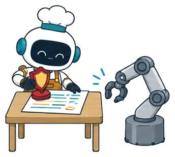
24.8%
PDDL problems written zero-shot by GPT-4o on Planetarium that are semantically correct. A formal check is only as precise as its specification.
Planetarium · Testing programs
04
Without them, a gain cannot be told from a regression.
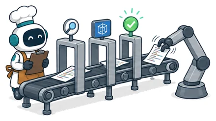
Progress will depend less on writing better programs than on building a physical counterpart of continuous integration: verification cheap enough to run often, reliable enough to trust under search, and maintained alongside the experience it validates.
If the physical world is to serve as the test suite, its tests must be tested as well.
05
The paper pairs each open problem with a first experiment. Six of them:
First experiment Measure how many program changes accepted by a whole loop of generation, judging, and library acceptance then fail an independent check.
First experiment Evaluate a judge on the programs a search produces, not only on a fixed set of episodes.
First experiment Re-run earlier task and seed pairs after each library update under matched conditions, and report retention with uncertainty.
First experiment Re-test a stored library after a controlled change of dynamics, camera, robot, or API, and report the fraction that still works.
First experiment Chained VLA skills fail at the handoff. Give primitives an end state they declare and check, so that composition can be tested.
First experiment Run held-out, human-written checks on a sample of accepted tasks to estimate how many a pipeline accepts wrongly.
06
@misc{li2026world,
title = {When the World Is the Test Suite: Agentic Intelligence for the Physical World},
author = {Li, Kaixin and Luo, Meng and Li, Yanlin and Tian, Yuchen and Liu, Xiang and Jian, Xiangru and Yang, Yan and Xi, Zhiheng and Zhang, Yang and Luo, Ziyang and Cheng, Mingfei and Lin, Hongzhan},
year = {2026},
url = {https://PhysicalWorldAgent.github.io/}
}